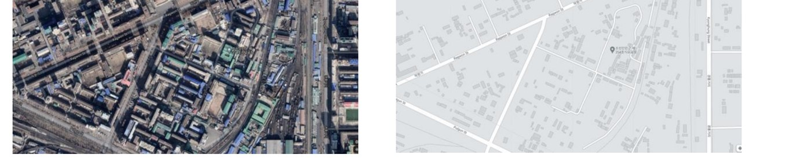
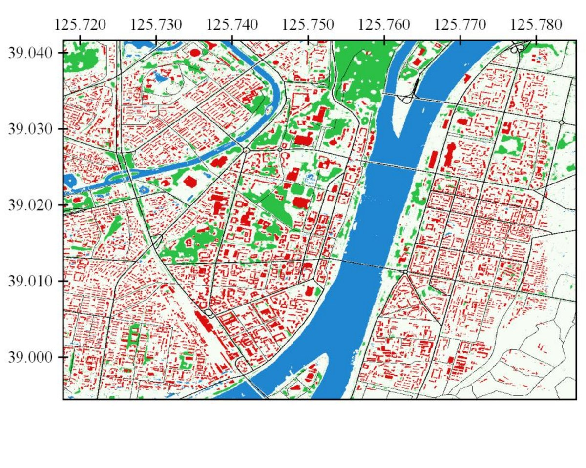
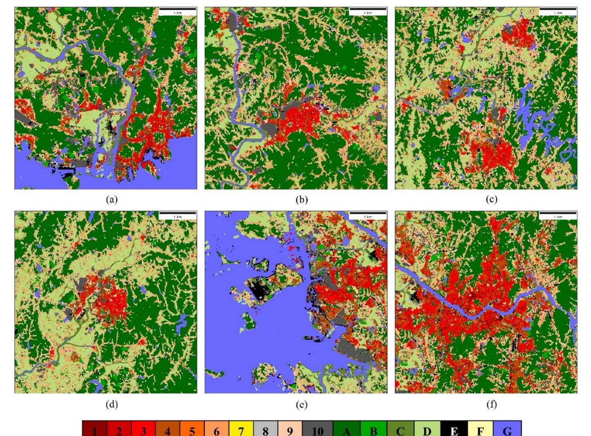
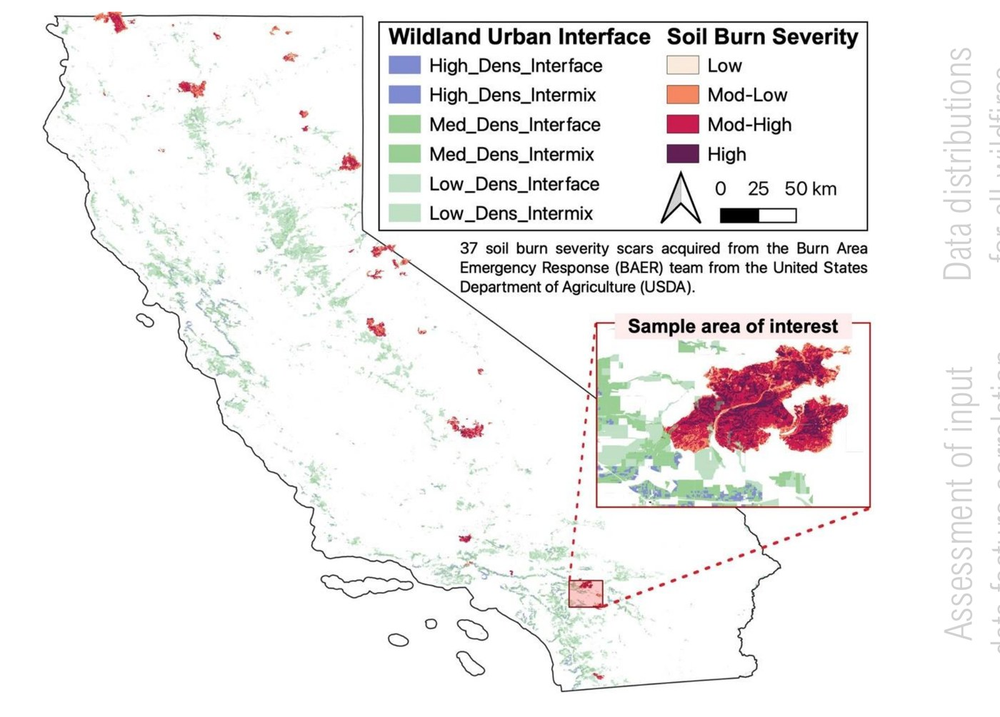

Geospatial Data Science
Overview
Geospatial data science is how I build the high-resolution maps that models and policy both depend on. My work spans two application areas: Urban, mapping the built environment and its climate impacts, and Natural Hazards, mapping the fuels, terrain, and severity that shape wildfire risk. Methodologically, I'm advancing image processing and sensing, pushing satellite and aerial imagery, deep learning, and computer vision toward higher-resolution, more reliable maps for disaster risk management and sustainable development.
My Work
Urban
Land cover features like roads and buildings are fundamental to any mapping platform, but in inaccessible areas, crowdsourced maps like OpenStreetMap are often incomplete and outdated. I built a deep learning pipeline that generates high-resolution land cover maps directly from very-high-resolution (<50cm) satellite imagery, tested on North Korea's infrastructure, letting users fill in and update outdated maps with the roads, buildings, vegetation, and water that existing platforms miss.


I built the same kind of high-resolution mapping for urban climate: MSMLA-Net, a multi-scale, multi-level attention network (see the interactive architecture on the Computational Modeling page), classifies Local Climate Zones, a standardized scheme for characterizing urban form and heterogeneity, from Sentinel-2 imagery. Tested across six South Korean cities, it outperformed three state-of-the-art models and, notably, still exceeded 70% built-up accuracy on cities it had never seen during training, evidence that it generalizes rather than just memorizing individual cities.

Natural Hazards
Communities in the Wildland Urban Interface are at growing risk of devastation from higher-severity, more frequent fires. Using historic data from past wildfires, I trained a machine learning model to predict burn severity in California, using local "patches" of data rather than individual pixels since WUI landscapes are so heterogeneous, and compared feature importance to find that burn severity is driven mostly by fuels and topography rather than raw spectral bands. I also use semantic segmentation to map high-resolution enhanced landforms and surface fuel models, a direct input to the fire spread simulations discussed on the Computational Modeling page, work being developed further in collaboration with Interlinked, an early-stage startup building an AI-powered platform for disaster response, to map fuel models at a state-wide scale. Looking ahead, I'm extending this toward forecasting real-time wildfire risk with geospatial AI, building a fire-weather forecasting system with the Catalan Fire Service that uses self-supervised deep learning to answer a simple, operationally useful question: what is today's fire weather forecast most similar to, and what did that day's fire behavior look like?
